Introducción a los SIG en R
![]()
Instituto de Ciencias Forestales (CIFOR) | INIA-CSIC (Madrid)
2025-02-07
Introducción
Tipos de Datos Espaciales
Datos Vectoriales

The big 7
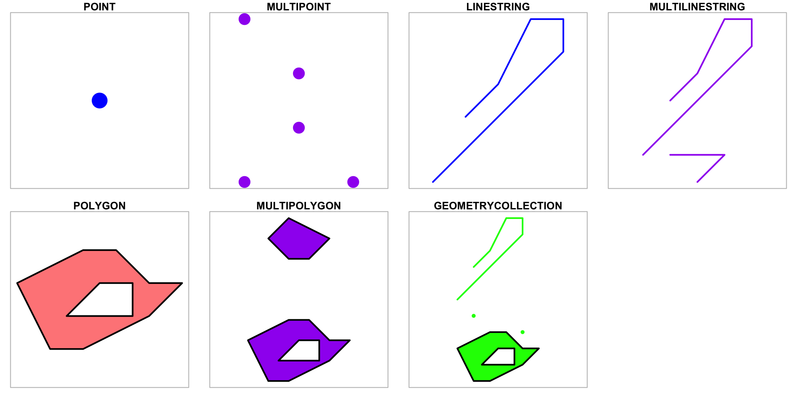
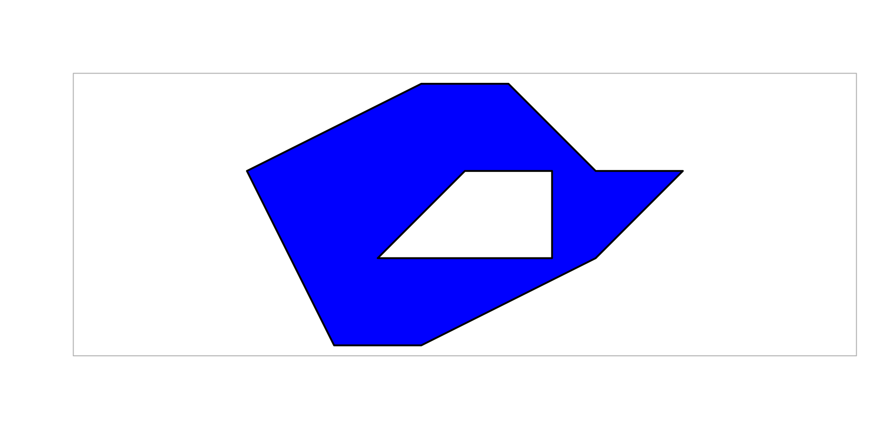
Simple feature geometries
- Es un estándar (ISO 19125-1:2004)
- Forma de describir las geometrías de los objetos espaciales
- features: elementos que tienen una geometría y atributos adicionales que pueden incluir etiquetas descriptivas y/o valores que los cuantifican
- simple se refiere a que las líneas y polígonos se pueden representar como secuencias de puntos conectados
Simple feature geometries
- Cada punto tiene al menos dos coordenadas \(x\) e \(y\)
Note
- Generalmente van en ese orden
- Si son coord. elipsoidales puede ser
longitudylatitud. Ojo enEPSG:4326el primer eje es lalatitud
- Coordenadas separadas por espacios:
(0 1) - Puntos separados por comas:
((1 1), (2 2)) - Conjuntos agrupados por paréntesis
()y separados por, - Los polígonos tienen un anillo externo y ninguno o varios anillos internos (
holes)
Simple feature geometries
- La representación en fomato texto se conoce como Well-Known Text (WKT)
MULTIPOLYGON (((2 1, 3 1, 5 2, 6 3, 5 3, 4 4, 3 4, 1 3, 2 1), (2.5 2, 3.5 3, 4.5 3, 4.5 2, 2.5 2)), ((3 7, 4 7, 5 8, 3 9, 2 8, 3 7)))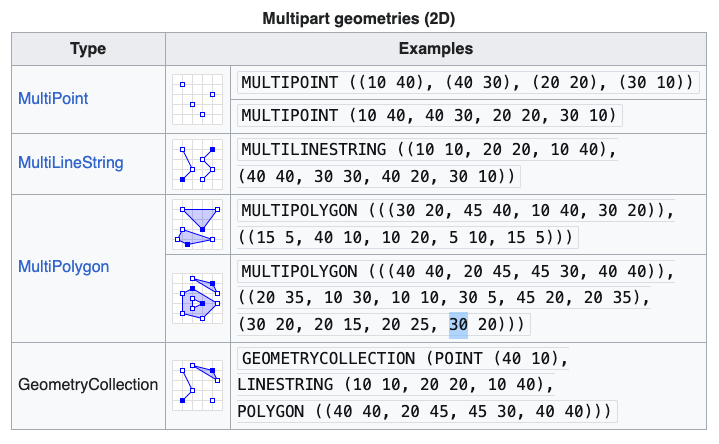
Simple feature geometries
- Validez de la geometría
LINESTRINGsimples: cuando no intersectanPOLYGONyMULTIPOLYGON:- anillos de los polígonos están cerrados (el último punto es igual al primero)
- Los anillos internos están dentro de su anillo exterior
- Los anillos internos de los polígonos tocan el anillo exterior como máximo en un solo punto, no a lo largo de una línea
- Convención: anillo externo (antihorario); anillo interno (horario)
¿Geometrías válidas?
- Convertir a válido
Formatos de datos vectoriales más comúnes
| formato | extension | paquetes |
|---|---|---|
| Esri shapefile | .shp | rgdal, sf, maptools, raster |
| CSV / GeoCSV | .csv | utils, sf, tidyverse |
| GPX | .gpx | plotKML, XML, maptools |
| KML / KMZ | .kml; .kmz | rgdal, XML, sf |
| GML / XML | .gml, .xml | XML, multiplex |
| GeoJSON | .geojson; .json | geojsonio, rgdal, geojsonR, rjson |
| OpenStreetMap | .osm | OpenStreetMap, osmdata, tmaptools |
Fuentes: Royé, D & Serrano, R (2019). Lovelace et al. (2022)
Atributos
- Propiedades del objeto espacial que no describen su geometría
- Tipos:
- propiedades derivadas de la geometría
- no derivadas de la geometría
Atributos (I)

Atributos: derivados de geometría
Importar datos Vectoriales
paquete sf
st_read()- Función completa para leer archivos espaciales
- Permite controlar más parámetros, e.g.
quiet = TRUEpara suprimir mensajes
read_sf()- Versión simplificada de
st_read() - Más amigable para
tidyverse. Devuelve unsftibble
- Versión simplificada de
| Característica | st_read() |
read_sf() |
|---|---|---|
| Funcionalidad | Control total sobre la lectura de datos espaciales | Versión simplificada, orientada a tidyverse |
| Tipo de salida | sf + data.frame |
sf + tibble |
| Salida en consola | Muestra más metadatos (CRS, número de geometrías) | Mensajes mínimos |
| Parámetros disponibles | Mayor flexibilidad (quiet = TRUE, layer, stringsAsFactors) |
Menos opciones de configuración |
| Conversión de texto | Puede controlar stringsAsFactors |
Usa caracteres (character) por defecto |
| Rendimiento | Más lento por el procesamiento extra de metadatos | Más rápido, ideal para grandes volúmenes de datos |
Importar datos vectoriales
Reading layer `sn_wdpa' from data source
`/Users/ajpelu/Library/CloudStorage/GoogleDrive-ajperez@go.ugr.es/My Drive/_docencia/ecoinformatica/ecoinformatica_web/ecoinformatica/assets/ext_data/geoinfo/sn_wdpa.shp'
using driver `ESRI Shapefile'
Simple feature collection with 1 feature and 28 fields
Geometry type: POLYGON
Dimension: XY
Bounding box: xmin: -3.643279 ymin: 36.91291 xmax: -2.588546 ymax: 37.25318
Geodetic CRS: WGS 84Importar datos vectoriales: Shapefiles
- Formato propietario mas extendido
- Mínimo 3 archivos:
.shp: contiene la geometría.shx: indexa las geometrías.dbf: almacena los atributos en formato tabular- Otros:
.prj: proyección.sbn,.sbx: índice espacial de las geometrías.sph.xml: metadatos geospaciales
Importar datos vectoriales: Shapefiles
Reading layer `sn_wdpa' from data source
`/Users/ajpelu/Library/CloudStorage/GoogleDrive-ajperez@go.ugr.es/My Drive/_docencia/ecoinformatica/ecoinformatica_web/ecoinformatica/assets/ext_data/geoinfo/sn_wdpa.shp'
using driver `ESRI Shapefile'
Simple feature collection with 1 feature and 28 fields
Geometry type: POLYGON
Dimension: XY
Bounding box: xmin: -3.643279 ymin: 36.91291 xmax: -2.588546 ymax: 37.25318
Geodetic CRS: WGS 84Importar datos vectoriales: Shapefiles
Simple feature collection with 1 feature and 28 fields
Geometry type: POLYGON
Dimension: XY
Bounding box: xmin: -3.643279 ymin: 36.91291 xmax: -2.588546 ymax: 37.25318
Geodetic CRS: WGS 84
WDPAID WDPA_PI PA_DEF NAME ORIG_NA
1 555588878 555588878 1 Sierra Nevada Sierra Nevada
DESIG DESIG_E DESIG_T IUCN_CA
1 Zona de Importancia Comunitaria ZIC (ZEPA/ZEC) Natura 2000 National IV
INT_CRI MARINE REP_M_A REP_ARE NO_TAKE NO_TK_A STATUS
1 Not Applicable 0 0 1722.38 Not Applicable 0 Designated
STATUS_ GOV_TYP OWN_TYP
1 1992 Federal or national ministry or agency Not Reported
MANG_AU MANG_PL VERIF METADAT SUB_LOC PARENT_
1 Junta de Andalucía Not Reported State Verified 2013 Not Reported ESP
ISO3 SUPP_IN CONS_OB geometry
1 ESP Not Applicable Not Applicable POLYGON ((-3.384833 36.9406...Visualizar
Visualizar
Convertir a objetos spaciales
- Importar un csv con las coordenadas y convertirlo a un objeto espacial
# A tibble: 6 × 8
x y crs id_unique_code version province_code
<dbl> <dbl> <dbl> <chr> <chr> <chr>
1 507000. 4112000. 23030 04_0792_NN_A3C_xx ifn3 04
2 507000. 4112000. 23030 04_0792_xx_A3E_xx ifn3 04
3 510000. 4111000. 23030 04_0794_xx_A4_xx ifn3 04
4 506000. 4110000. 23030 04_0795_NN_A1_xx ifn3 04
5 507000. 4110000. 23030 04_0796_NN_A1_xx ifn3 04
6 508000. 4110000. 23030 04_0797_NN_A1_xx ifn3 04
# ℹ 2 more variables: province_name_original <chr>, plot <chr>Convertir a objetos spaciales
Kml
Importar datos vectoriales: GPX
url <- "https://cdn.dipgra.es/my-media-files-bucket/documents/1461659948SulayrCompleto.gpx"
download.file(
url = url,
destfile = here::here("assets/ext_data/geoinfo/sulary.gpx")
)
sulayr <- read_sf(here::here("assets/ext_data/geoinfo/sulary.gpx"))Warning in CPL_read_ogr(dsn, layer, query, as.character(options), quiet, :
automatically selected the first layer in a data source containing more than
one.¿Qué nos está adviertiendo con este warning?
Importar datos vectoriales: Capas disponibles
- Algunos objetos espaciales pueden contener varias capas
- Explorar las capas existentes con
st_layers
Driver: GPX
Available layers:
layer_name geometry_type features fields crs_name
1 waypoints Point 34 24 WGS 84
2 routes Line String 0 12 WGS 84
3 tracks Multi Line String 1 13 WGS 84
4 route_points Point 0 25 WGS 84
5 track_points Point 11759 26 WGS 84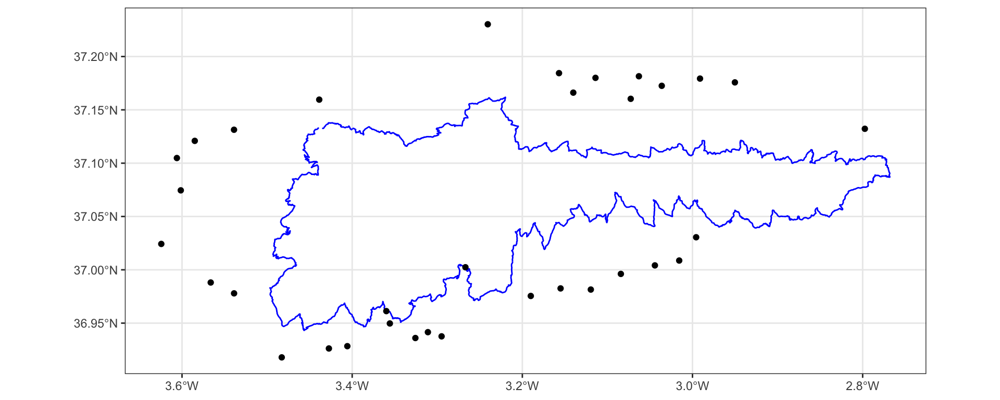
Ráster

Ráster
Ráster
Componentes de un ráster
| Componente | Descripción |
|---|---|
Dimensiones (dim()) |
Número de filas, columnas y bandas. |
Extensión (ext()) |
Coordenadas mínimas y máximas (xmin, xmax, ymin, ymax). |
Resolución (res()) |
Tamaño de cada celda en unidades espaciales. |
Número de Bandas (nlyr()) |
Cantidad de capas o bandas en el raster (multibanda o singleband). |
Sistema de Referencia (crs()) |
Código EPSG o Proyección (WGS84, UTM, etc.). |
Valores (values()) |
Datos almacenados en cada celda (elevación, temperatura, NDVI, etc.). |
Extensión

Resolución ráster
- Tamaño de cada celda
- Nivel de detalle:
- Alta resolución: Celdas pequeñas, más detalle
- Baja resolución: Celdas grandes, menos detalle
- Cálculo: \[ resolución = \frac{x_{max} - x_{min}}{n_{columnas}}, \frac{y_{max} - y_{min}}{n_{filas}} \]
Extensión - Resolución - Sistema de Coordenadas
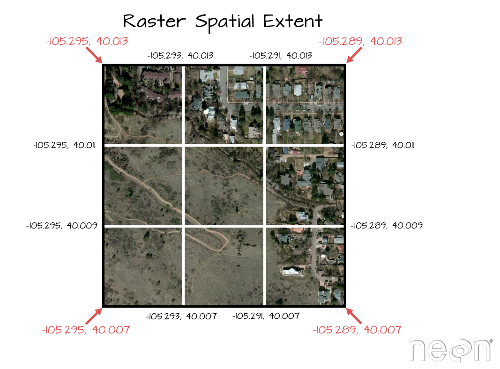
Ejemplo Ráster
library(terra)
my_rast <- terra::rast(here::here("assets/ext_data/geoinfo/tmin_1971_2000_3042.tif"))
my_rastclass : SpatRaster
dimensions : 453, 364, 1 (nrow, ncol, nlyr)
resolution : 100, 100 (x, y)
extent : 437414, 473814, 4071295, 4116595 (xmin, xmax, ymin, ymax)
coord. ref. : ETRS89 / UTM zone 30N
source : tmin_1971_2000_3042.tif
name : tmin_1971_2000
min value : -1.647195
max value : 12.123637 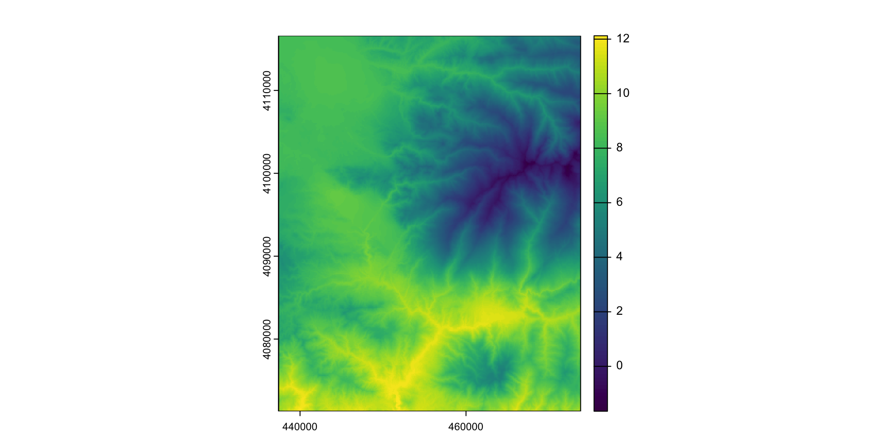
Formatos ráster más comunes
| formato | extension | paquetes |
|---|---|---|
| Esri grid | rgdal, sp, SDMTools | |
| GeoTiff | .tif, .tiff, .ovr | raster, terra |
| ASCII | .asc, .txt | raster, terra, rgdal |
| IMG | .img | raster, terra |
Sistemas de Referencia de Coordenadas
- Datos espaciales = datos + CRS
- Modelo matemático que conecta los datos con la superficie de la Tierra
- CRS le dice al software (QGIS, R, …) en que espacio geográfico está la información, y qué metodo usar para proyectar la información sobre el espacio geográfico
Sistemas de Referencia de Coordenadas
Estándares para compartir información CRS
proj:
[1] "+proj=longlat +datum=WGS84 +no_defs"EPSG:
Coordinate Reference System:
User input: WGS 84
wkt:
GEOGCRS["WGS 84",
DATUM["World Geodetic System 1984",
ELLIPSOID["WGS 84",6378137,298.257223563,
LENGTHUNIT["metre",1]]],
PRIMEM["Greenwich",0,
ANGLEUNIT["degree",0.0174532925199433]],
CS[ellipsoidal,2],
AXIS["latitude",north,
ORDER[1],
ANGLEUNIT["degree",0.0174532925199433]],
AXIS["longitude",east,
ORDER[2],
ANGLEUNIT["degree",0.0174532925199433]],
ID["EPSG",4326]]Sistemas de Referencia de Coordenadas
- Comprobar proyección
tmin <- terra::rast((here::here("assets/ext_data/geoinfo/tmin_1971_2000_3042.tif")))
terra::crs(tmin)[1] "PROJCRS[\"ETRS89 / UTM zone 30N\",\n BASEGEOGCRS[\"ETRS89\",\n DATUM[\"European Terrestrial Reference System 1989\",\n ELLIPSOID[\"GRS 1980\",6378137,298.257222101,\n LENGTHUNIT[\"metre\",1]],\n ID[\"EPSG\",6258]],\n PRIMEM[\"Greenwich\",0,\n ANGLEUNIT[\"degree\",0.0174532925199433,\n ID[\"EPSG\",9122]]]],\n CONVERSION[\"Transverse Mercator\",\n METHOD[\"Transverse Mercator\",\n ID[\"EPSG\",9807]],\n PARAMETER[\"Latitude of natural origin\",0,\n ANGLEUNIT[\"degree\",0.0174532925199433],\n ID[\"EPSG\",8801]],\n PARAMETER[\"Longitude of natural origin\",-3,\n ANGLEUNIT[\"degree\",0.0174532925199433],\n ID[\"EPSG\",8802]],\n PARAMETER[\"Scale factor at natural origin\",0.9996,\n SCALEUNIT[\"unity\",1],\n ID[\"EPSG\",8805]],\n PARAMETER[\"False easting\",500000,\n LENGTHUNIT[\"metre\",1],\n ID[\"EPSG\",8806]],\n PARAMETER[\"False northing\",0,\n LENGTHUNIT[\"metre\",1],\n ID[\"EPSG\",8807]]],\n CS[Cartesian,2],\n AXIS[\"easting\",east,\n ORDER[1],\n LENGTHUNIT[\"metre\",1,\n ID[\"EPSG\",9001]]],\n AXIS[\"northing\",north,\n ORDER[2],\n LENGTHUNIT[\"metre\",1,\n ID[\"EPSG\",9001]]]]"Sistemas de Referencia de Coordenadas
- Transformar (e.g.
EPSG:4326)
Sistemas de Referencia de Coordenadas
- Conversión vectorial
Consultar metadatos Ráster
Stacks
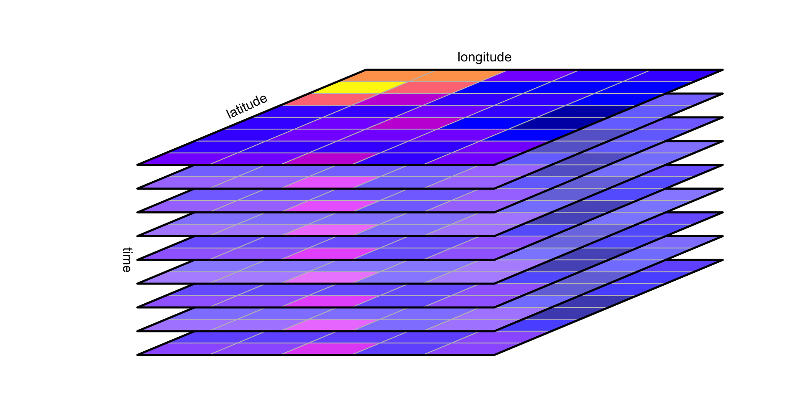
Fuente: Pebesma & Bivand (2025)
Data cubes
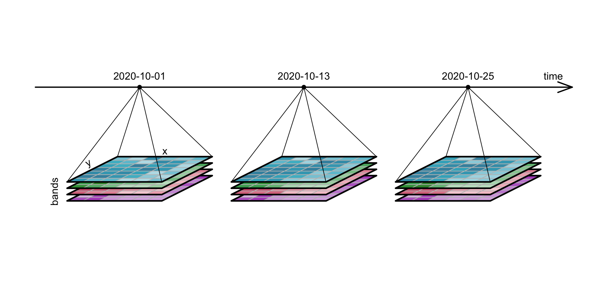
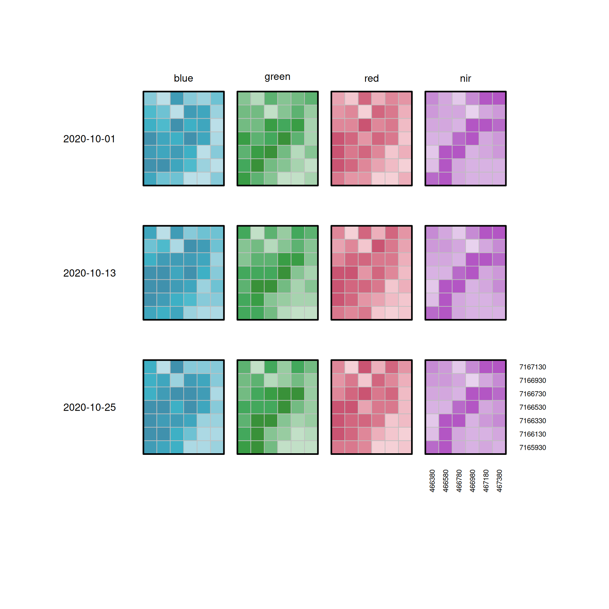
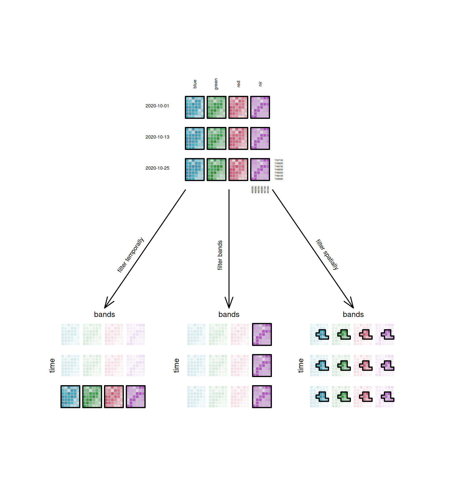
Operaciones básicas con vectores
Bounding box
Métricas: Área
¿Porqué aparecen dos valores para el área?
Simple feature collection with 2 features and 1 field
Geometry type: MULTIPOLYGON
Dimension: XY
Bounding box: xmin: -9.479736 ymin: 36.02593 xmax: 4.32207 ymax: 43.76455
Geodetic CRS: +proj=longlat +ellps=clrk66 +no_defs +type=crs
ID geom
Spain Spain MULTIPOLYGON (((1.593945 38...
Portugal Portugal MULTIPOLYGON (((-7.406153 3...Métricas: Perímetro
Calcula el perímetro de Portugal
Métricas: Distancia
Ejemplo: Tenemos una parcela en un pinar de repoblación, en la que estamos evaluando la cantidad de semillas de Quercíneas que pueden llegar dispersadas por el arrendajo. Si tenemos una matrix de paisaje conformada por diferentes manchas de encinar y robledal, y suponiendo que las diferentes manchas de bosque de quercíneas tienen la misma cantidad de propágulos y la misma probabilidad de ser visitadas por los arrendajos, ¿Quien tiene mas probabilidad de colonizar el pinar de repoblación?
Code
library(sf)
library(dplyr)
# Crear polígonos irregulares distribuidos más aleatoriamente
encinar_1 <- st_polygon(list(rbind(c(1,5), c(2.3,4.2), c(3.2,5.6), c(3,7), c(2.1,7.5), c(1.3,7), c(0.7,5.8), c(1,5))))
encinar_2 <- st_polygon(list(rbind(c(7,2), c(8.5,1.1), c(9.6,2.3), c(9.2,3.9), c(8.4,4.4), c(7.6,4.1), c(7.1,2.8), c(7,2))))
robledal_1 <- st_polygon(list(rbind(c(3,8), c(4.7,7.1), c(5.4,8.5), c(5.1,9.6), c(4.3,10.3), c(3.5,9.9), c(3.1,8.8), c(3,8))))
robledal_2 <- st_polygon(list(rbind(c(8,6), c(9.9,5.0), c(10.8,7.1), c(10.2,8.5), c(9.1,9.3), c(8.2,7.8), c(8,6))))
pinar <- st_polygon(list(rbind(c(4,4), c(6.1,2.8), c(7,5), c(6.5,6.5), c(5.6,6.0), c(4.8,4.6), c(4,4))))
manchas <- st_sf(
nombre = c("Encinar A", "Encinar B", "Robledal A", "Robledal B", "Pinar"),
tipo = c("Encinar", "Encinar", "Robledal", "Robledal", "Pinar"),
geometry = st_sfc(encinar_1, encinar_2, robledal_1, robledal_2, pinar),
colores = c("darkgreen", "darkgreen", "gold", "gold", "green"),
crs = 4326
)
manchas <- st_transform(manchas, 23030)
plot(manchas["tipo"], col = manchas$colores, graticule = TRUE, axes = TRUE)
legend("bottomleft", legend = unique(manchas$tipo),
fill = unique(manchas$colores), title = "Tipo de Manchas")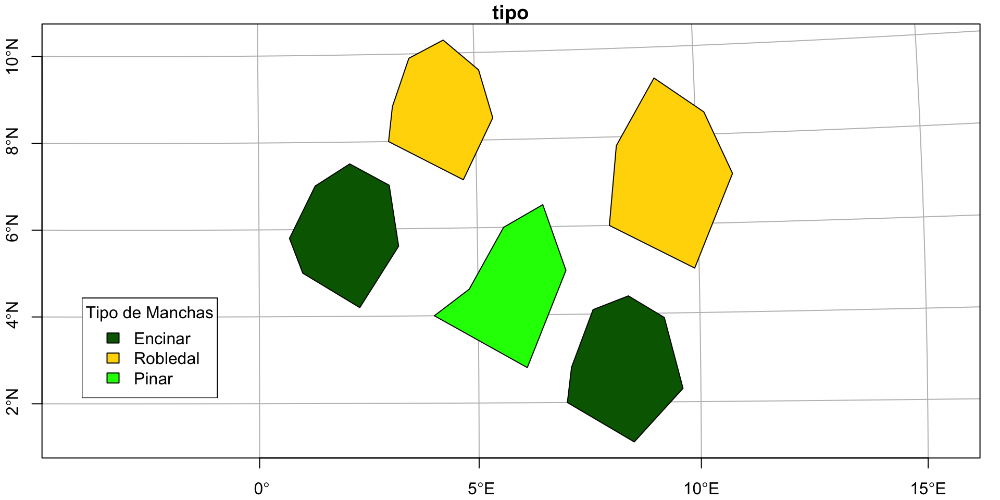
pinar_geom <-
manchas |> filter(tipo == "Pinar") |> st_geometry()
# Calcular la distancia desde encinares y robledales al pinar
distancias <- manchas |>
filter(tipo %in% c("Encinar", "Robledal")) |>
mutate(distancia_pinar = st_distance(geometry, pinar_geom))
# Mostrar la tabla con las distancias
distancias |>
st_drop_geometry() |>
print() nombre tipo colores distancia_pinar
1 Encinar A Encinar darkgreen 171639.7 [m]
2 Encinar B Encinar darkgreen 101197.6 [m]
3 Robledal A Robledal gold 158715.4 [m]
4 Robledal B Robledal gold 142413.1 [m]Calcular los centroides
Simple feature collection with 5 features and 3 fields
Geometry type: POINT
Dimension: XY
Bounding box: xmin: 1056093 ymin: 312472.9 xmax: 1875675 ymax: 970443.5
Projected CRS: ED50 / UTM zone 30N
nombre tipo colores geometry
1 Encinar A Encinar darkgreen POINT (1056093 654811.1)
2 Encinar B Encinar darkgreen POINT (1764113 312472.9)
3 Robledal A Robledal gold POINT (1295830 970443.5)
4 Robledal B Robledal gold POINT (1875675 801768.1)
5 Pinar Pinar green POINT (1478019 512249.9)Selección espacial
¿Qué parcelas del Inventario forestal puedo usar para evaluar el estado de la vegetación en la zona del incendio de Lanjarón?
Selección espacial
Unión de atributos
Permite unir tablas de atributos a los objetos espaciales.
Tienen que compartir una clave común
Ejemplo: Representa la riqueza de cada parcela forestal en Sierra Nevada
Unión de atributos: visualización
Code
library(ggspatial)
ggplot() +
geom_sf(data = sn, color = "blue", size = 1) +
geom_sf(data = ifn_sn_geo_riqueza, aes(size = riqueza)) +
annotation_north_arrow(location = "topleft",
width = unit(1, "cm")) +
annotation_scale(location = "br", width_hint = 0.3) +
theme_bw() +
ggtitle("Parcelas del Inventario Nacional Forestal (IFN3) en Sierra Nevada")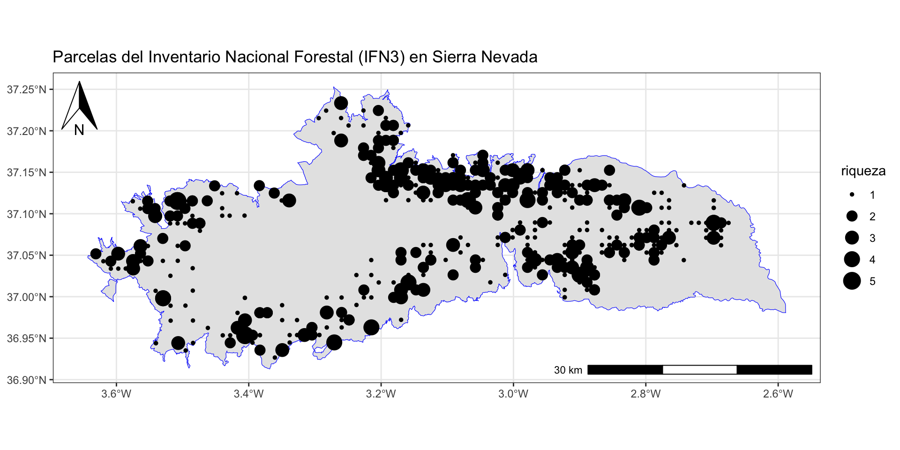
(Extra) Uniones de datos tabulares

Visualización de mapas
Elementos básicos de un mapa
- Escala: Establece la relación entre las distancias en el mapa y las distancias reales en el terreno
- Simbología y Leyenda: Define los símbolos, colores y estilos utilizados para representar los elementos geográficos, permitiendo al usuario interpretar correctamente la información presentada
- Flecha de Norte (Rosa de los Vientos): Indica la orientación del mapa, ayudando al lector a comprender la dirección de los elementos geográficos
- Cuadrícula de Coordenadas: Proporciona un sistema de referencia que facilita la localización precisa de puntos en el mapa, mostrando líneas y etiquetas de coordenadas
- Mapa de Ubicación: Ofrece una vista general que sitúa el área de estudio dentro de un contexto geográfico más amplio, ayudando al lector a comprender su ubicación relativa
Visualización de mapas
Code
library(ggspatial)
mapa<- ggplot() +
geom_sf(data = sn, color = "blue", size = 1) +
geom_sf(data = ifn_sn_geo) +
annotation_north_arrow(location = "topleft",
width = unit(1, "cm")) +
annotation_scale(location = "br", width_hint = 0.3) +
theme_bw() +
ggtitle("Parcelas del Inventario Nacional Forestal (IFN3) en Sierra Nevada")
mapa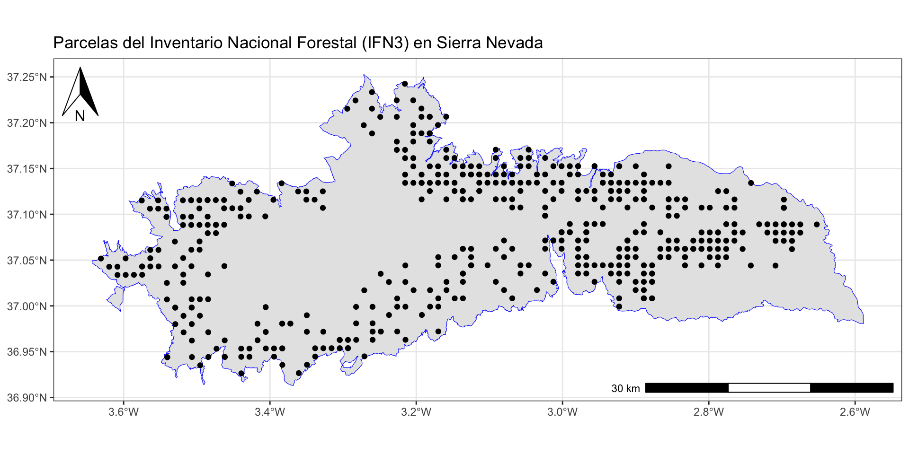
Visualización de mapas
Visualización de mapas
Operaciones básicas con raster
¿Alguna duda?
Ayuda JDC2022-050056-I financiada por MCIN/AEI /10.13039/501100011033 y por la Unión Europea NextGenerationEU/PRTR
Si usas esta presentación puedes citarla como:
Pérez-Luque, A.J. (2025). Introducción a los SIG con R. Material Docente de la Asignatura: Ciclo de Gestión de los Datos. Master Universitario en Conservación, Gestión y Restauración de la Biodiversidad. Universidad de Granada. https://ecoinfugr.github.io/ecoinformatica/

Master Universitario en Conservación, Gestión y Restauración de la Biodiversidad